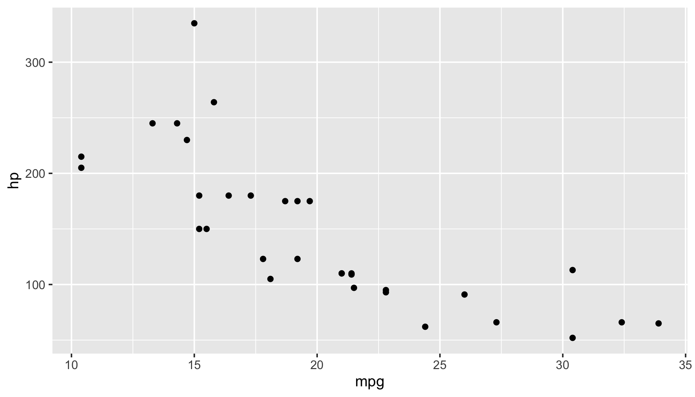

To do this, you can first hide all of the code chunks by using the echo: false option in the header under the execute argument (see more on customizing code chunk execution here). Then you can automatically add a copy of all of the code chunks at the end of the document as an appendix! Here’s an example:
library(ggplot2)ggplot(mtcars) +geom_point(aes(x = mpg, y = hp))

I could then insert an appendix of all the code chunks in this document like this:
Appendix
Below is all of the code used to generate this report
Begin notes here
Reflection
Source Code
---title: "title"author: "author"format: html: toc: true toc-location: right theme: minty code-fold: true code-tools: true---```{r}#| label: setup#| include: falseknitr::opts_chunk$set(warning =FALSE,message =FALSE,fig.path ="figs/",fig.width =7.252,fig.height =4,comment ="#>",fig.retina =3)```# Tip of the week## How to make an appendix of all your codeTo do this, you can first hide all of the code chunks by using the `echo: false` option in the header under the `execute` argument (see more on customizing code chunk execution [here](https://quarto.org/docs/computations/execution-options.html)). Then you can automatically add a copy of all of the code chunks at the end of the document as an appendix! Here's an example:Let's say I had a code chunk like this:```{r}# View the first few rows of the datahead(mtcars)```and then I made a chart like this:```{r}#| label: scatterplot#| fig.width: 7#| fig.height: 4library(ggplot2)ggplot(mtcars) +geom_point(aes(x = mpg, y = hp))```I could then insert an appendix of all the code chunks in this document like this:# AppendixBelow is all of the code used to generate this report```{r}#| label: get-labels#| echo: false#| eval: truelabs <- knitr::all_labels()``````{r all-code}#| eval: false#| ref.label: labs```# Begin notes here# Reflection